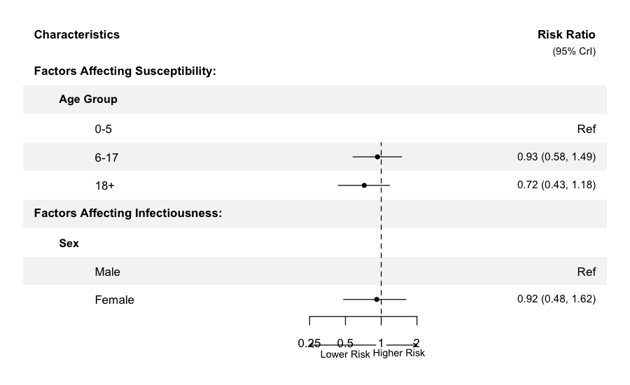
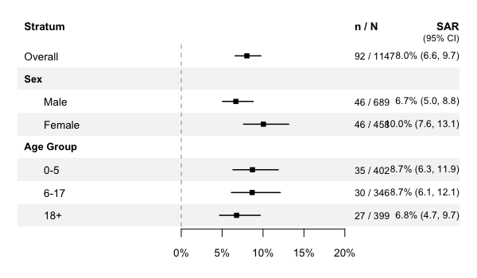

hhdynamics fits Bayesian household transmission models to case-ascertained household studies. It estimates infection risk among household contacts based on time since illness onset, incorporating covariates for infectivity and susceptibility, and accounting for community infection sources. The MCMC backend is written in C++ via Rcpp/RcppArmadillo for speed.
Features
- Bayesian MCMC estimation of household transmission parameters with community infection
-
Covariate effects on infectivity and susceptibility via R formula interface (
~sex,~age + vaccination) -
Serial interval estimation — jointly estimate Weibull SI parameters from data (
estimate_SI = TRUE) - Missing data handling — automatic Bayesian imputation of missing factor covariates and onset times
- Publication-ready plots — MCMC diagnostics, transmission curves, forest plots of covariate effects, attack rates
- Summary tables — parameter estimates, covariate effects (relative risks), secondary attack rates with CIs
-
S3 methods —
print(),summary(),coef(),plot()for fitted model objects
Quick start
library(hhdynamics)
data(inputdata)
# Fit model with covariates (uses default influenza serial interval)
fit <- household_dynamics(inputdata,
inf_factor = ~sex, sus_factor = ~age,
n_iteration = 30000, burnin = 10000, thinning = 1)
summary(fit)Visualization
Covariate effects (forest plot)
plot_covariates(fit, file = "covariates.pdf",
labels = list(
sex = list(name = "Sex", levels = c("Male", "Female")),
age = list(name = "Age Group", levels = c("0-5", "6-17", "18+"))))
The forest plot auto-sizes the PDF dimensions based on the number of covariates. Custom labels can be provided for variable headers and factor levels.
Secondary attack rates
# Combine overall + stratified by sex and age in one figure
plot_attack_rate(fit, by = list(~sex, ~age), include_overall = TRUE,
labels = list(
sex = list(name = "Sex", levels = c("Male", "Female")),
age = list(name = "Age Group", levels = c("0-5", "6-17", "18+"))))
Tables
# Parameter estimates on natural scale
table_parameters(fit)
# Covariate effects as relative risks with CrIs
table_covariates(fit)
# Secondary attack rates with Wilson CIs
table_attack_rates(fit, by = ~age)Advanced features
Joint serial interval estimation
Estimate the serial interval distribution from the data as a Weibull(shape, scale):
fit_si <- household_dynamics(inputdata, ~sex, ~age,
estimate_SI = TRUE, n_iteration = 30000, burnin = 10000)
summary(fit_si) # includes si_shape, si_scaleMissing data imputation
Missing factor covariates and missing onset times for infected contacts are automatically imputed during MCMC via Bayesian data augmentation:
# Works with NAs in factor covariates and contact onset times
inputdata$age[c(5, 10, 15)] <- NA
fit_missing <- household_dynamics(inputdata, ~sex, ~age,
n_iteration = 30000, burnin = 10000)Custom serial interval
my_SI <- c(0, 0.01, 0.05, 0.15, 0.25, 0.25, 0.15, 0.08, 0.04, 0.015, 0.005, 0, 0, 0)
fit_custom <- household_dynamics(inputdata, SI = my_SI,
n_iteration = 30000, burnin = 10000)